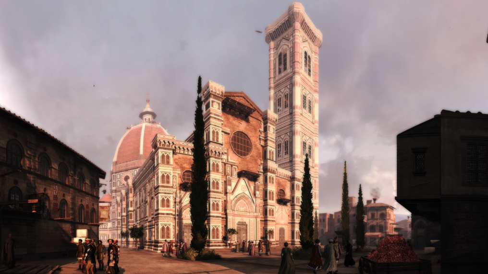

Florence the City of Lilies: Assassin's Creed II Review
And when I thought of Florence, it was like a miracle city embalmed and like a corolla, because it was called the city of lilies and its cathedral, St. Mary of the Flowers.
― Marcel Proust, Swann's Way
BY DAVID CLAYMAN Assassin's Creed II is the follow-up to Ubisoft's 2007 hit that attracted a mass audience if not unanimous critical acclaim. The sequel is an expansive and bloody romp through Renaissance Italy that plays up every popular aspect of the first installment while righting many of its flaws. Assassin's Creed II has evolved from an ill-defined action game into a fully featured open world experience. Everything from the new monetary system to the ability to buy armor and weapons makes it a richer, and ultimately more satisfying game than its predecessor.
The plot of Assassin's Creed pulls together a bit of The Matrix, a lot of historical fiction, and throws in elements of the madcap conspiracy theories found in a Dan Brown novel. The series also has the benefit of being crafted by some of the most talented hands in game development. With only a handful of exceptions, the environments, animations, and art are beautifully portrayed. In addition to its good looks, the sequel's gameplay builds so much upon the foundations of the first game, that in retrospect, the first Assassin's Creed looks like little more than a technical demonstration.
Both fans and detractors of Assassin's Creed will be pleased to know that the sequel fully addresses and ties up many of the loose ends from the last game. It picks up exactly where we left off, with the kidnapped bartender Desmond locked in his cell at Abstergo. This corporation is the modern-day face of the Templars and they're after Desmond's valuable genetic memories. The magic of modern technology allows Desmond to relive the exploits of his Assassin ancestors. His genealogy puts him at the center of a war between the Templars and Assassins.
The game starts off with a bang, springing Desmond from jail and introducing him to the Assassins at their secret hideout. Here they have access to the same technology that allows Desmond to relive the past. In the last game, his brain was forcibly used to reveal powerful artifacts hidden in 12th century Jerusalem. This time Desmond temporally relocates to 15th century Italy by choice to learn the ways of the Assassins through the life of Ezio Audituerre de Firenze.

It's a convoluted setup, but it's also a great excuse to skip around in time, taking control of a character for only the most interesting moments of his life. Players are introduced to Ezio at the moment of his birth as part of a clever lesson on movement. It then jumps to his formative years as a womanizer, a street fighter, and the son of a wealthy banker. He isn't a wholly likable character, but the game steers us towards a revenge plot that provides the player plenty of motivation to stick with the story. The Renaissance setting also adds a much needed dose of color and humor to the series.
As we learn more about Ezio and become acquainted with his hometown of Florence, the game presents bite-sized bits of information on how to play Assassin's Creed II. This interweaving of plot and tutorial establishes an intriguing tale of revenge and slowly explains a varied and complicated control scheme.
In the early missions, we're introduced to the excellent free running system that allows players to climb over almost any surface. Movement speed in Assassin's Creed II has been significantly increased from the first game, enabling players to fluidly zip around the city. The animations are still excellent, and Ezio's body realistically adjusts to his environment as he climbs and vaults past obstacles. The only downside of free running is that there are moments when the camera doesn't present the best view of what's over the next rooftop. Overzealous free runners will take more damage from falling off buildings than they'll ever take from a sword.